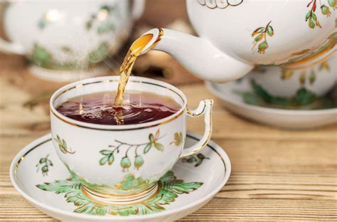

Here is the recipe for Mrs. Hudson's famous afternoon tea. Sometimes the
simple things are best.
Ingredients
- 1 Twining's english breakfast tea bag
- Boiling Water
- 1 teaspoon low-fat milk
- 1 teaspoon sugar
- First, you have to boil the water - don't just heat it, boil it.
-
Second, add the boiling water to the tea bag, not the other way round. -
putting the water in the cup and adding the bag to it - is a recipe for
disaster. Unless the water is at boiling point when it makes contact
with the tea, the tea will never properly brew.
-
Make sure the cup or pot is nice and hot before you start. If necessary,
rinse it out with near-boiling water. And keep it covered while the tea
is brewing.
-
Leave the bag in the water for at least two minutes - longer if you like
your tea strong. And for goodness sake, resist the temptation to dunk.
Just leave the bag alone until the drink is ready!
- Add milk and sugar to taste.